All in One View
Content from Python Fundamentals
Last updated on 2026-11-24 | Edit this page
Overview
Questions
- What basic data types can I work with in Python?
- How can I create a new variable in Python?
- How do I use a function?
- Can I change the value associated with a variable after I create it?
- How can I get help while learning to program?
Objectives
- Assign values to variables.
Variables
Any Python interpreter can be used as a calculator:
OUTPUT
23This is great but not very interesting. To do anything useful with
data, we need to assign its value to a variable. In Python, we
can assign a value to a variable, using the equals sign
=. For example, we can track the weight of a patient who
weighs 60 kilograms by assigning the value 60 to a variable
weight_kg:
From now on, whenever we use weight_kg, Python will
substitute the value we assigned to it. In layperson’s terms, a
variable is a name for a value.
In Python, variable names:
- can include letters, digits, and underscores
- cannot start with a digit
- are case sensitive.
This means that, for example:
-
weight0is a valid variable name, whereas0weightis not -
weightandWeightare different variables
Types of data
Python knows various types of data. Three common ones are:
In the example above, variable weight_kg has an integer
value of 60. If we want to more precisely track the weight
of our patient, we can use a floating point value by executing:
To create a string, we add single or double quotes around some text. To identify and track a patient throughout our study, we can assign each person a unique identifier by storing it in a string:
Using Variables in Python
Once we have data stored with variable names, we can make use of it in calculations. We may want to store our patient’s weight in pounds as well as kilograms:
We might decide to add a prefix to our patient identifier:
Built-in Python functions
To carry out common tasks with data and variables in Python, the
language provides us with several built-in functions. To display information to
the screen, we use the print function:
OUTPUT
132.66
inflam_001When we want to make use of a function, referred to as calling the
function, we follow its name by parentheses. The parentheses are
important: if you leave them off, the function doesn’t actually run!
Sometimes you will include values or variables inside the parentheses
for the function to use. In the case of print, we use the
parentheses to tell the function what value we want to display. We will
learn more about how functions work and how to create our own in later
episodes.
We can display multiple things at once using only one
print call:
OUTPUT
inflam_001 weight in kilograms: 60.3We can also call a function inside of another function call. For example,
Python has a built-in function called type that tells you a
value’s data type:
OUTPUT
<class 'float'>
<class 'str'>Moreover, we can do arithmetic with variables right inside the
print function:
OUTPUT
weight in pounds: 132.66The above command, however, did not change the value of
weight_kg:
OUTPUT
60.3To change the value of the weight_kg variable, we have
to assign weight_kg a new value using the
equals = sign:
OUTPUT
weight in kilograms is now: 65.0Getting Help
Use the built-in function help to get help for a
function. Every built-in function has extensive documentation that
can also be found online.
OUTPUT
Help on built-in function print in module builtins:
print(*args, sep=' ', end='\n', file=None, flush=False)
Prints the values to a stream, or to sys.stdout by default.
sep
string inserted between values, default a space.
end
string appended after the last value, default a newline.
file
a file-like object (stream); defaults to the current sys.stdout.
flush
whether to forcibly flush the stream.This help message, which includes information from the function’s documentation, provides a usage statement, a list of parameters accepted by the function, and their default values.
It is normal to encounter error messages while programming, whether you are learning for the first time or have been programming for many years. We will discuss error messages in the Advance Python course. For now, let’s explore how people use them to get more help when they are stuck with their Python code.
- Search the internet: paste the last line of your error message or
the word “python” and a short description of what you want to do into
your favourite search engine and you will usually find several examples
where other people have encountered the same problem and came looking
for help.
- StackOverflow can be particularly helpful for this: answers to questions are presented as a ranked thread ordered according to how useful other users found them to be.
- Take care: copying and pasting code written by somebody else is risky unless you understand exactly what it is doing!
- Ask somebody “in the real world”. If you have a colleague or friend with more expertise in Python than you have, show them the problem you are having and ask them for help.
We will discuss more debugging strategies in the Advanced Python course.
Generative AI
It is increasingly common for people to use generative AI chatbots such as ChatGPT to get help while coding. You will probably receive some useful guidance by presenting your error message to the chatbot and asking it what went wrong. However, the way this help is provided by the chatbot is different. Answers on StackOverflow have (probably) been given by a human as a direct response to the question asked. But generative AI chatbots, which are based on an advanced statistical model, respond by generating the most likely sequence of text that would follow the prompt they are given.
While responses from generative AI tools can often be helpful, they are not always reliable. These tools sometimes generate plausible but incorrect or misleading information, so (just as with an answer found on the internet) it is essential to verify their accuracy. You need the knowledge and skills to be able to understand these responses, to judge whether or not they are accurate, and to fix any errors in the code it offers you.
In addition to asking for help, programmers can use generative AI tools to generate code from scratch; extend, improve and reorganise existing code; translate code between programming languages; figure out what terms to use in a search of the internet; and more. However, there are drawbacks that you should be aware of.
The models used by these tools have been “trained” on very large volumes of data, much of it taken from the internet, and the responses they produce reflect that training data, and may recapitulate its inaccuracies or biases. The environmental costs (energy and water use) of LLMs are a lot higher than other technologies, both during development (known as training) and when an individual user uses one (also called inference). For more information see the AI Environmental Impact Primer developed by researchers at HuggingFace, an AI hosting platform. Concerns also exist about the way the data for this training was obtained, with questions raised about whether the people developing the LLMs had permission to use it. Other ethical concerns have also been raised, such as reports that workers were exploited during the training process.
We recommend that you avoid getting help from generative AI during the workshop for several reasons:
- For most problems you will encounter at this stage, help and answers can be found among the first results returned by searching the internet.
- The foundational knowledge and skills you will learn in this lesson by writing and fixing your own programs are essential to be able to evaluate the correctness and safety of any code you receive from online help or a generative AI chatbot. If you choose to use these tools in the future, the expertise you gain from learning and practising these fundamentals on your own will help you use them more effectively.
- As you start out with programming, the mistakes you make will be the kinds that have also been made – and overcome! – by everybody else who learned to program before you. Since these mistakes and the questions you are likely to have at this stage are common, they are also better represented than other, more specialised problems and tasks in the data that was used to train generative AI tools. This means that a generative AI chatbot is more likely to produce accurate responses to questions that novices ask, which could give you a false impression of how reliable they will be when you are ready to do things that are more advanced.
Variables as Sticky Notes
A variable in Python is analogous to a sticky note with a name written on it: assigning a value to a variable is like putting that sticky note on a particular value.
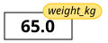
Using this analogy, we can investigate how assigning a value to one variable does not change values of other, seemingly related, variables. For example, let’s store the subject’s weight in pounds in its own variable:
PYTHON
# There are 2.2 pounds per kilogram
weight_lb = 2.2 * weight_kg
print('weight in kilograms:', weight_kg, 'and in pounds:', weight_lb)OUTPUT
weight in kilograms: 65.0 and in pounds: 143.0Everything in a line of code following the ‘#’ symbol is a comment that is ignored by Python. Comments allow programmers to leave explanatory notes for other programmers or their future selves.
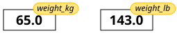
Similar to above, the expression 2.2 * weight_kg is
evaluated to 143.0, and then this value is assigned to the
variable weight_lb (i.e. the sticky note
weight_lb is placed on 143.0). At this point,
each variable is “stuck” to completely distinct and unrelated
values.
Let’s now change weight_kg:
PYTHON
weight_kg = 100.0
print('weight in kilograms is now:', weight_kg, 'and weight in pounds is still:', weight_lb)OUTPUT
weight in kilograms is now: 100.0 and weight in pounds is still: 143.0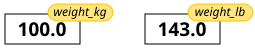
Since weight_lb doesn’t “remember” where its value comes
from, it is not updated when we change weight_kg.
OUTPUT
`mass` holds a value of 47.5, `age` does not exist
`mass` still holds a value of 47.5, `age` holds a value of 122
`mass` now has a value of 95.0, `age`'s value is still 122
`mass` still has a value of 95.0, `age` now holds 102OUTPUT
Hopper GraceKey Points
- Basic data types in Python include integers, strings, and floating-point numbers.
- Use
variable = valueto assign a value to a variable in order to record it in memory. - Variables are created on demand whenever a value is assigned to them.
- Use
print(something)to display the value ofsomething. - Use
# some kind of explanationto add comments to programs. - Built-in functions are always available to use.
- Use
help(thing)to view help for something. - Error messages provide information about what has gone wrong with your program and where.
Content from Analyzing Patient Data
Last updated on 2026-11-24 | Edit this page
Overview
Questions
- How can I process tabular data files in Python?
Objectives
- Explain what a library is and what libraries are used for.
- Import a Python library and use the functions it contains.
- Read tabular data from a file into a program.
- Select individual values and subsections from data.
- Perform operations on arrays of data.
Words are useful, but what’s more useful are the sentences and stories we build with them. Similarly, while a lot of powerful, general tools are built into Python, specialized tools built up from these basic units live in libraries that can be called upon when needed.
Loading data into Python
To begin processing the clinical trial inflammation data, we need to load it into Python. We can do that using a library called NumPy, which stands for Numerical Python. In general, you should use this library when you want to do fancy things with lots of numbers, especially if you have matrices or arrays. To tell Python that we’d like to start using NumPy, we need to import it:
Importing a library is like getting a piece of lab equipment out of a storage locker and setting it up on the bench. Libraries provide additional functionality to the basic Python package, much like a new piece of equipment adds functionality to a lab space. Just like in the lab, importing too many libraries can sometimes complicate and slow down your programs - so we only import what we need for each program.
Once we’ve imported the library, we can ask the library to read our data file for us:
OUTPUT
array([[ 0., 0., 1., ..., 3., 0., 0.],
[ 0., 1., 2., ..., 1., 0., 1.],
[ 0., 1., 1., ..., 2., 1., 1.],
...,
[ 0., 1., 1., ..., 1., 1., 1.],
[ 0., 0., 0., ..., 0., 2., 0.],
[ 0., 0., 1., ..., 1., 1., 0.]])The expression numpy.loadtxt(...) is a function call that asks Python
to run the function
loadtxt which belongs to the numpy library.
The dot notation in Python is used most of all as an object
attribute/property specifier or for invoking its method.
object.property will give you the object.property value,
object_name.method() will invoke on object_name method.
As an example, John Smith is the John that belongs to the Smith
family. We could use the dot notation to write his name
smith.john, just as loadtxt is a function that
belongs to the numpy library.
numpy.loadtxt has two parameters: the name of the file we
want to read and the delimiter
that separates values on a line. These both need to be character strings
(or strings for short), so we put
them in quotes.
Since we haven’t told it to do anything else with the function’s
output, the notebook displays it.
In this case, that output is the data we just loaded. By default, only a
few rows and columns are shown (with ... to omit elements
when displaying big arrays). Note that, to save space when displaying
NumPy arrays, Python does not show us trailing zeros, so
1.0 becomes 1..
Our call to numpy.loadtxt read our file but didn’t save
the data in memory. To do that, we need to assign the array to a
variable. In a similar manner to how we assign a single value to a
variable, we can also assign an array of values to a variable using the
same syntax. Let’s re-run numpy.loadtxt and save the
returned data:
This statement doesn’t produce any output because we’ve assigned the
output to the variable data. If we want to check that the
data have been loaded, we can print the variable’s value:
OUTPUT
[[ 0. 0. 1. ..., 3. 0. 0.]
[ 0. 1. 2. ..., 1. 0. 1.]
[ 0. 1. 1. ..., 2. 1. 1.]
...,
[ 0. 1. 1. ..., 1. 1. 1.]
[ 0. 0. 0. ..., 0. 2. 0.]
[ 0. 0. 1. ..., 1. 1. 0.]]Now that the data are in memory, we can manipulate them. First, let’s
ask what type of thing
data refers to:
OUTPUT
<class 'numpy.ndarray'>The output tells us that data currently refers to an
N-dimensional array, the functionality for which is provided by the
NumPy library. These data correspond to arthritis patients’
inflammation. The rows are the individual patients, and the columns are
their daily inflammation measurements.
Data Type
A Numpy array contains one or more elements of the same type. The
type function will only tell you that a variable is a NumPy
array but won’t tell you the type of thing inside the array. We can find
out the type of the data contained in the NumPy array.
OUTPUT
float64This tells us that the NumPy array’s elements are floating-point numbers.
With the following command, we can see the array’s shape:
OUTPUT
(60, 40)The output tells us that the data array variable
contains 60 rows and 40 columns. When we created the variable
data to store our arthritis data, we did not only create
the array; we also created information about the array, called members or attributes. This extra
information describes data in the same way an adjective
describes a noun. data.shape is an attribute of
data which describes the dimensions of data.
We use the same dotted notation for the attributes of variables that we
use for the functions in libraries because they have the same
part-and-whole relationship.
If we want to get a single number from the array, we must provide an index in square brackets after the variable name, just as we do in math when referring to an element of a matrix. Our inflammation data has two dimensions, so we will need to use two indices to refer to one specific value:
OUTPUT
first value in data: 0.0OUTPUT
middle value in data: 16.0The expression data[29, 19] accesses the element at row
30, column 20. While this expression may not surprise you,
data[0, 0] might. Programming languages like Fortran,
MATLAB and R start counting at 1 because that’s what human beings have
done for thousands of years. Languages in the C family (including C++,
Java, Perl, and Python) count from 0 because it represents an offset
from the first value in the array (the second value is offset by one
index from the first value). This is closer to the way that computers
represent arrays (if you are interested in the historical reasons behind
counting indices from zero, you can read Mike
Hoye’s blog post). As a result, if we have an M×N array in Python,
its indices go from 0 to M-1 on the first axis and 0 to N-1 on the
second. It takes a bit of getting used to, but one way to remember the
rule is that the index is how many steps we have to take from the start
to get the item we want.
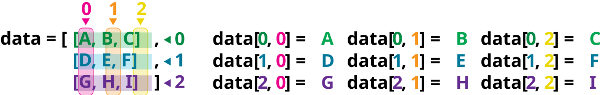
In the Corner
What may also surprise you is that when Python displays an array, it
shows the element with index [0, 0] in the upper left
corner rather than the lower left. This is consistent with the way
mathematicians draw matrices but different from the Cartesian
coordinates. The indices are (row, column) instead of (column, row) for
the same reason, which can be confusing when plotting data.
Slicing data
An index like [30, 20] selects a single element of an
array, but we can select whole sections as well. For example, we can
select the first ten days (columns) of values for the first four
patients (rows) like this:
OUTPUT
[[ 0. 0. 1. 3. 1. 2. 4. 7. 8. 3.]
[ 0. 1. 2. 1. 2. 1. 3. 2. 2. 6.]
[ 0. 1. 1. 3. 3. 2. 6. 2. 5. 9.]
[ 0. 0. 2. 0. 4. 2. 2. 1. 6. 7.]]The slice 0:4 means,
“Start at index 0 and go up to, but not including, index 4”. Again, the
up-to-but-not-including takes a bit of getting used to, but the rule is
that the difference between the upper and lower bounds is the number of
values in the slice.
We don’t have to start slices at 0:
OUTPUT
[[ 0. 0. 1. 2. 2. 4. 2. 1. 6. 4.]
[ 0. 0. 2. 2. 4. 2. 2. 5. 5. 8.]
[ 0. 0. 1. 2. 3. 1. 2. 3. 5. 3.]
[ 0. 0. 0. 3. 1. 5. 6. 5. 5. 8.]
[ 0. 1. 1. 2. 1. 3. 5. 3. 5. 8.]]We also don’t have to include the upper and lower bound on the slice. If we don’t include the lower bound, Python uses 0 by default; if we don’t include the upper, the slice runs to the end of the axis, and if we don’t include either (i.e., if we use ‘:’ on its own), the slice includes everything:
The above example selects rows 0 through 2 and columns 36 through to the end of the array.
OUTPUT
small is:
[[ 2. 3. 0. 0.]
[ 1. 1. 0. 1.]
[ 2. 2. 1. 1.]]Analyzing data
NumPy has several useful functions that take an array as input to
perform operations on its values. If we want to find the average
inflammation for all patients on all days, for example, we can ask NumPy
to compute data’s mean value:
OUTPUT
6.14875mean is a function
that takes an array as an argument.
Not All Functions Have Input
Generally, a function uses inputs to produce outputs. However, some functions produce outputs without needing any input. For example, checking the current time doesn’t require any input.
OUTPUT
Sat Mar 26 13:07:33 2016For functions that don’t take in any arguments, we still need
parentheses (()) to tell Python to go and do something for
us.
Let’s use three other NumPy functions to get some descriptive values about the dataset. We’ll also use multiple assignment, a convenient Python feature that will enable us to do this all in one line.
PYTHON
maxval, minval, stdval = numpy.max(data), numpy.min(data), numpy.std(data)
print('maximum inflammation:', maxval)
print('minimum inflammation:', minval)
print('standard deviation:', stdval)Here we’ve assigned the return value from
numpy.max(data) to the variable maxval, the
value from numpy.min(data) to minval, and so
on.
OUTPUT
maximum inflammation: 20.0
minimum inflammation: 0.0
standard deviation: 4.61383319712Mystery Functions in IPython
How did we know what functions NumPy has and how to use them? If you
are working in IPython or in a Jupyter Notebook, there is an easy way to
find out. If you type the name of something followed by a dot, then you
can use tab completion
(e.g. type numpy. and then press Tab) to see a
list of all functions and attributes that you can use. After selecting
one, you can also add a question mark
(e.g. numpy.cumprod?), and IPython will return an
explanation of the method! This is the same as doing
help(numpy.cumprod). Similarly, if you are using the “plain
vanilla” Python interpreter, you can type numpy. and press
the Tab key twice for a listing of what is available. You can
then use the help() function to see an explanation of the
function you’re interested in, for example:
help(numpy.cumprod).
When analyzing data, though, we often want to look at variations in statistical values, such as the maximum inflammation per patient or the average inflammation per day. One way to do this is to create a new temporary array of the data we want, then ask it to do the calculation:
PYTHON
patient_0 = data[0, :] # 0 on the first axis (rows), everything on the second (columns)
print('maximum inflammation for patient 0:', numpy.max(patient_0))OUTPUT
maximum inflammation for patient 0: 18.0We don’t actually need to store the row in a variable of its own. Instead, we can combine the selection and the function call:
OUTPUT
maximum inflammation for patient 2: 19.0What if we need the maximum inflammation for each patient over all days (as in the next diagram on the left) or the average for each day (as in the diagram on the right)? As the diagram below shows, we want to perform the operation across an axis:
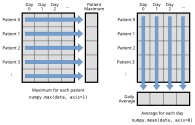
To find the maximum inflammation reported for each
patient, you would apply the max function moving
across the columns (axis 1). To find the daily average
inflammation reported across patients, you would apply the
mean function moving down the rows (axis 0).
To support this functionality, most array functions allow us to specify the axis we want to work on. If we ask for the maximum across axis 1 (columns in our 2D example), we get:
OUTPUT
[18. 18. 19. 17. 17. 18. 17. 20. 17. 18. 18. 18. 17. 16. 17. 18. 19. 19.
17. 19. 19. 16. 17. 15. 17. 17. 18. 17. 20. 17. 16. 19. 15. 15. 19. 17.
16. 17. 19. 16. 18. 19. 16. 19. 18. 16. 19. 15. 16. 18. 14. 20. 17. 15.
17. 16. 17. 19. 18. 18.]As a quick check, we can ask this array what its shape is. We expect 60 patient maxima:
OUTPUT
(60,)The expression (60,) tells us we have an N×1 vector, so
this is the maximum inflammation per day for each patients.
If we ask for the average across/down axis 0 (rows in our 2D example), we get:
OUTPUT
[ 0. 0.45 1.11666667 1.75 2.43333333 3.15
3.8 3.88333333 5.23333333 5.51666667 5.95 5.9
8.35 7.73333333 8.36666667 9.5 9.58333333 10.63333333
11.56666667 12.35 13.25 11.96666667 11.03333333 10.16666667
10. 8.66666667 9.15 7.25 7.33333333 6.58333333
6.06666667 5.95 5.11666667 3.6 3.3 3.56666667
2.48333333 1.5 1.13333333 0.56666667]Check the array shape. We expect 40 averages, one for each day of the study:
OUTPUT
(40,)Similarly, we can apply the mean function to axis 1 to
get the patient’s average inflammation over the duration of the study
(60 values).
OUTPUT
[5.45 5.425 6.1 5.9 5.55 6.225 5.975 6.65 6.625 6.525 6.775 5.8
6.225 5.75 5.225 6.3 6.55 5.7 5.85 6.55 5.775 5.825 6.175 6.1
5.8 6.425 6.05 6.025 6.175 6.55 6.175 6.35 6.725 6.125 7.075 5.725
5.925 6.15 6.075 5.75 5.975 5.725 6.3 5.9 6.75 5.925 7.225 6.15
5.95 6.275 5.7 6.1 6.825 5.975 6.725 5.7 6.25 6.4 7.05 5.9 ]Slicing Strings
A section of an array is called a slice. We can take slices of character strings as well:
PYTHON
element = 'oxygen'
print('first three characters:', element[0:3])
print('last three characters:', element[3:6])OUTPUT
first three characters: oxy
last three characters: genWhat is the value of element[:4]? What about
element[4:]? Or element[:]?
OUTPUT
oxyg
en
oxygenSlicing Strings (continued)
What is element[-1]? What is
element[-2]?
OUTPUT
n
eSlicing Strings (continued)
Given those answers, explain what element[1:-1]
does.
Creates a substring from index 1 up to (not including) the final index, effectively removing the first and last letters from ‘oxygen’
Slicing Strings (continued)
How can we rewrite the slice for getting the last three characters of
element, so that it works even if we assign a different
string to element? Test your solution with the following
strings: carpentry, clone,
hi.
PYTHON
element = 'oxygen'
print('last three characters:', element[-3:])
element = 'carpentry'
print('last three characters:', element[-3:])
element = 'clone'
print('last three characters:', element[-3:])
element = 'hi'
print('last three characters:', element[-3:])OUTPUT
last three characters: gen
last three characters: try
last three characters: one
last three characters: hiThin Slices
The expression element[3:3] produces an empty string, i.e., a string that
contains no characters. If data holds our array of patient
data, what does data[3:3, 4:4] produce? What about
data[3:3, :]?
OUTPUT
array([], shape=(0, 0), dtype=float64)
array([], shape=(0, 40), dtype=float64)Stacking Arrays
Arrays can be concatenated and stacked on top of one another, using
NumPy’s vstack and hstack functions for
vertical and horizontal stacking, respectively.
PYTHON
import numpy
A = numpy.array([[1, 2, 3], [4, 5, 6], [7, 8, 9]])
print('A = ')
print(A)
B = numpy.hstack([A, A])
print('B = ')
print(B)
C = numpy.vstack([A, A])
print('C = ')
print(C)OUTPUT
A =
[[1 2 3]
[4 5 6]
[7 8 9]]
B =
[[1 2 3 1 2 3]
[4 5 6 4 5 6]
[7 8 9 7 8 9]]
C =
[[1 2 3]
[4 5 6]
[7 8 9]
[1 2 3]
[4 5 6]
[7 8 9]]Write some additional code that slices the first and last columns of
A, and stacks them into a 3x2 array. Make sure to
print the results to verify your solution.
A ‘gotcha’ with array indexing is that singleton dimensions are
dropped by default. That means A[:, 0] is a one dimensional
array, which won’t stack as desired. To preserve singleton dimensions,
the index itself can be a slice or array. For example,
A[:, :1] returns a two dimensional array with one singleton
dimension (i.e. a column vector).
OUTPUT
D =
[[1 3]
[4 6]
[7 9]]Change In Inflammation
The patient data is longitudinal in the sense that each row represents a series of observations relating to one individual. This means that the change in inflammation over time is a meaningful concept. Let’s find out how to calculate changes in the data contained in an array with NumPy.
The numpy.diff() function takes an array and returns the
differences between two successive values. Let’s use it to examine the
changes each day across the first week of patient 3 from our
inflammation dataset.
OUTPUT
[0. 0. 2. 0. 4. 2. 2.]Calling numpy.diff(patient3_week1) would do the
following calculations
and return the 6 difference values in a new array.
OUTPUT
array([ 0., 2., -2., 4., -2., 0.])Note that the array of differences is shorter by one element (length 6).
When calling numpy.diff with a multi-dimensional array,
an axis argument may be passed to the function to specify
which axis to process. When applying numpy.diff to our 2D
inflammation array data, which axis would we specify?
Change In Inflammation (continued)
If the shape of an individual data file is (60, 40) (60
rows and 40 columns), what would the shape of the array be after you run
the diff() function and why?
The shape will be (60, 39) because there is one fewer
difference between columns than there are columns in the data.
Change In Inflammation (continued)
How would you find the largest change in inflammation for each patient? Does it matter if the change in inflammation is an increase or a decrease?
By using the numpy.max() function after you apply the
numpy.diff() function, you will get the largest difference
between days.
PYTHON
array([ 7., 12., 11., 10., 11., 13., 10., 8., 10., 10., 7.,
7., 13., 7., 10., 10., 8., 10., 9., 10., 13., 7.,
12., 9., 12., 11., 10., 10., 7., 10., 11., 10., 8.,
11., 12., 10., 9., 10., 13., 10., 7., 7., 10., 13.,
12., 8., 8., 10., 10., 9., 8., 13., 10., 7., 10.,
8., 12., 10., 7., 12.])If inflammation values decrease along an axis, then the
difference from one element to the next will be negative. If you are
interested in the magnitude of the change and not the
direction, the numpy.absolute() function will provide
that.
Notice the difference if you get the largest absolute difference between readings.
PYTHON
array([ 12., 14., 11., 13., 11., 13., 10., 12., 10., 10., 10.,
12., 13., 10., 11., 10., 12., 13., 9., 10., 13., 9.,
12., 9., 12., 11., 10., 13., 9., 13., 11., 11., 8.,
11., 12., 13., 9., 10., 13., 11., 11., 13., 11., 13.,
13., 10., 9., 10., 10., 9., 9., 13., 10., 9., 10.,
11., 13., 10., 10., 12.])Key Points
- Import a library into a program using
import libraryname. - Use the
numpylibrary to work with arrays in Python. - The expression
array.shapegives the shape of an array. - Use
array[x, y]to select a single element from a 2D array. - Array indices start at 0, not 1.
- Use
low:highto specify aslicethat includes the indices fromlowtohigh-1. - Use
# some kind of explanationto add comments to programs. - Use
numpy.mean(array),numpy.max(array), andnumpy.min(array)to calculate simple statistics. - Use
numpy.mean(array, axis=0)ornumpy.mean(array, axis=1)to calculate statistics across the specified axis.
Content from Visualizing Tabular Data
Last updated on 2026-11-24 | Edit this page
Overview
Questions
- How can I visualize tabular data in Python?
- How can I group several plots together?
Objectives
- Plot simple graphs from data.
- Plot multiple graphs in a single figure.
Visualizing data
The mathematician Richard Hamming once said, “The purpose of
computing is insight, not numbers,” and the best way to develop insight
is often to visualize data. Visualization deserves an entire lecture of
its own, but we can explore a few features of Python’s
matplotlib library here. While there is no official
plotting library, matplotlib is the de facto
standard. First, we will import the pyplot module from
matplotlib and use two of its functions to create and
display a heat map of our
data:
Episode Prerequisites
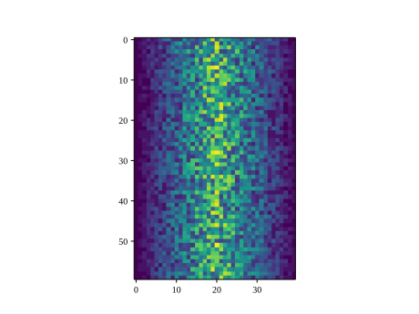
Each row in the heat map corresponds to a patient in the clinical trial dataset, and each column corresponds to a day in the dataset. Blue pixels in this heat map represent low values, while yellow pixels represent high values. As we can see, the general number of inflammation flare-ups for the patients rises and falls over a 40-day period.
So far so good as this is in line with our knowledge of the clinical trial and Dr. Maverick’s claims:
- the patients take their medication once their inflammation flare-ups begin
- it takes around 3 weeks for the medication to take effect and begin reducing flare-ups
- and flare-ups appear to drop to zero by the end of the clinical trial.
Now let’s take a look at the average inflammation over time:
PYTHON
ave_inflammation = numpy.mean(data, axis=0)
ave_plot = matplotlib.pyplot.plot(ave_inflammation)
matplotlib.pyplot.show()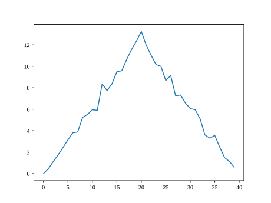
Here, we have put the average inflammation per day across all
patients in the variable ave_inflammation, then asked
matplotlib.pyplot to create and display a line graph of
those values. The result is a reasonably linear rise and fall, in line
with Dr. Maverick’s claim that the medication takes 3 weeks to take
effect. But a good data scientist doesn’t just consider the average of a
dataset, so let’s have a look at two other statistics:
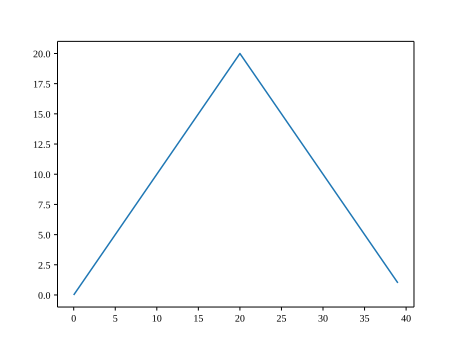
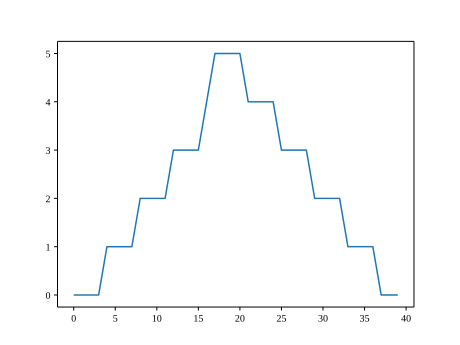
The maximum value rises and falls linearly, while the minimum seems to be a step function. Neither trend seems particularly likely, so either there’s a mistake in our calculations or something is wrong with our data. This insight would have been difficult to reach by examining the numbers themselves without visualization tools.
Grouping plots
You can group similar plots in a single figure using subplots. This
script below uses a number of new commands. The function
matplotlib.pyplot.figure() creates a space into which we
will place all of our plots. The parameter figsize tells
Python how big to make this space. Each subplot is placed into the
figure using its add_subplot method. The add_subplot
method takes 3 parameters. The first denotes how many total rows of
subplots there are, the second parameter refers to the total number of
subplot columns, and the final parameter denotes which subplot your
variable is referencing (left-to-right, top-to-bottom). Each subplot is
stored in a different variable (axes1, axes2,
axes3). Once a subplot is created, the axes can be titled
using the set_xlabel() command (or
set_ylabel()). Here are our three plots side by side:
PYTHON
import numpy
import matplotlib.pyplot
data = numpy.loadtxt(fname='inflammation-01.csv', delimiter=',')
fig = matplotlib.pyplot.figure(figsize=(10.0, 3.0))
axes1 = fig.add_subplot(1, 3, 1)
axes2 = fig.add_subplot(1, 3, 2)
axes3 = fig.add_subplot(1, 3, 3)
axes1.set_ylabel('average')
axes1.plot(numpy.mean(data, axis=0))
axes2.set_ylabel('max')
axes2.plot(numpy.max(data, axis=0))
axes3.set_ylabel('min')
axes3.plot(numpy.min(data, axis=0))
fig.tight_layout()
matplotlib.pyplot.savefig('inflammation.png')
matplotlib.pyplot.show()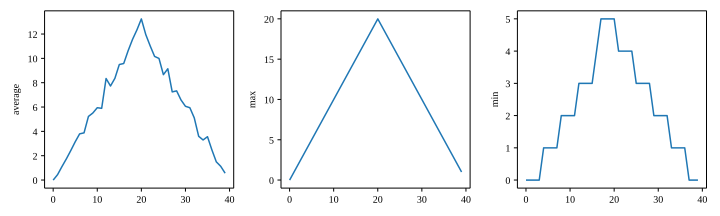
The call to
loadtxt reads our data, and the rest of the program tells
the plotting library how large we want the figure to be, that we’re
creating three subplots, what to draw for each one, and that we want a
tight layout. (If we leave out that call to
fig.tight_layout(), the graphs will actually be squeezed
together more closely.)
The call to savefig stores the plot as a graphics file.
This can be a convenient way to store your plots for use in other
documents, web pages etc. The graphics format is automatically
determined by Matplotlib from the file name ending we specify; here PNG
from ‘inflammation.png’. Matplotlib supports many different graphics
formats, including SVG, PDF, and JPEG.
Importing libraries with shortcuts
In this lesson we use the import matplotlib.pyplot syntax to import the
pyplot module of matplotlib. However,
shortcuts such as import matplotlib.pyplot as plt are
frequently used. Importing pyplot this way means that after
the initial import, rather than writing
matplotlib.pyplot.plot(...), you can now write
plt.plot(...). Another common convention is to use the
shortcut import numpy as np when importing the NumPy
library. We then can write np.loadtxt(...) instead of
numpy.loadtxt(...), for example.
Some people prefer these shortcuts as it is quicker to type and
results in shorter lines of code - especially for libraries with long
names! You will frequently see Python code online using a
pyplot function with plt, or a NumPy function
with np, and it’s because they’ve used this shortcut. It
makes no difference which approach you choose to take, but you must be
consistent as if you use import matplotlib.pyplot as plt
then matplotlib.pyplot.plot(...) will not work, and you
must use plt.plot(...) instead. Because of this, when
working with other people it is important you agree on how libraries are
imported.
Plot Scaling
Why do all of our plots stop just short of the upper end of our graph?
Because matplotlib normally sets x and y axes limits to the min and max of our data (depending on data range)
Drawing Straight Lines
In the center and right subplots above, we expect all lines to look like step functions because non-integer values are not realistic for the minimum and maximum values. However, you can see that the lines are not always vertical or horizontal, and in particular the step function in the subplot on the right looks slanted. Why is this?
Because matplotlib interpolates (draws a straight line) between the
points. One way to do avoid this is to use the Matplotlib
drawstyle option:
PYTHON
import numpy
import matplotlib.pyplot
data = numpy.loadtxt(fname='inflammation-01.csv', delimiter=',')
fig = matplotlib.pyplot.figure(figsize=(10.0, 3.0))
axes1 = fig.add_subplot(1, 3, 1)
axes2 = fig.add_subplot(1, 3, 2)
axes3 = fig.add_subplot(1, 3, 3)
axes1.set_ylabel('average')
axes1.plot(numpy.mean(data, axis=0), drawstyle='steps-mid')
axes2.set_ylabel('max')
axes2.plot(numpy.max(data, axis=0), drawstyle='steps-mid')
axes3.set_ylabel('min')
axes3.plot(numpy.min(data, axis=0), drawstyle='steps-mid')
fig.tight_layout()
matplotlib.pyplot.show()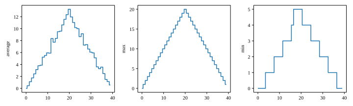
Make Your Own Plot
Create a plot showing the standard deviation (numpy.std)
of the inflammation data for each day across all patients.
Moving Plots Around
Modify the program to display the three plots on top of one another instead of side by side.
PYTHON
import numpy
import matplotlib.pyplot
data = numpy.loadtxt(fname='inflammation-01.csv', delimiter=',')
# change figsize (swap width and height)
fig = matplotlib.pyplot.figure(figsize=(3.0, 10.0))
# change add_subplot (swap first two parameters)
axes1 = fig.add_subplot(3, 1, 1)
axes2 = fig.add_subplot(3, 1, 2)
axes3 = fig.add_subplot(3, 1, 3)
axes1.set_ylabel('average')
axes1.plot(numpy.mean(data, axis=0))
axes2.set_ylabel('max')
axes2.plot(numpy.max(data, axis=0))
axes3.set_ylabel('min')
axes3.plot(numpy.min(data, axis=0))
fig.tight_layout()
matplotlib.pyplot.show()Key Points
- Use the
pyplotmodule from thematplotliblibrary for creating simple visualizations.
Content from Storing Multiple Values in Lists
Last updated on 2026-11-24 | Edit this page
Overview
Questions
- How can I store many values together?
Objectives
- Explain what a list is.
- Create and index lists of simple values.
- Change the values of individual elements
- Append values to an existing list
- Reorder and slice list elements
- Create and manipulate nested lists
In the previous episode, we analyzed a single file of clinical trial inflammation data. However, after finding some peculiar and potentially suspicious trends in the trial data we ask Dr. Maverick if they have performed any other clinical trials. Surprisingly, they say that they have and provide us with 11 more CSV files for a further 11 clinical trials they have undertaken since the initial trial.
Our goal now is to process all the inflammation data we have, which means that we still have eleven more files to go!
The natural first step is to collect the names of all the files that we have to process. In Python, a list is a way to store multiple values together. In this episode, we will learn how to store multiple values in a list as well as how to work with lists.
Python lists
Unlike NumPy arrays, lists are built into the language so we do not have to load a library to use them. We create a list by putting values inside square brackets and separating the values with commas:
OUTPUT
odds are: [1, 3, 5, 7]We can access elements of a list using indices – numbered positions of elements in the list. These positions are numbered starting at 0, so the first element has an index of 0.
PYTHON
print('first element:', odds[0])
print('last element:', odds[3])
print('"-1" element:', odds[-1])OUTPUT
first element: 1
last element: 7
"-1" element: 7Yes, we can use negative numbers as indices in Python. When we do so,
the index -1 gives us the last element in the list,
-2 the second to last, and so on. Because of this,
odds[3] and odds[-1] point to the same element
here.
There is one important difference between lists and strings: we can change the values in a list, but we cannot change individual characters in a string. For example:
PYTHON
names = ['Curie', 'Darwing', 'Turing'] # typo in Darwin's name
print('names is originally:', names)
names[1] = 'Darwin' # correct the name
print('final value of names:', names)OUTPUT
names is originally: ['Curie', 'Darwing', 'Turing']
final value of names: ['Curie', 'Darwin', 'Turing']works, but:
ERROR
---------------------------------------------------------------------------
TypeError Traceback (most recent call last)
<ipython-input-8-220df48aeb2e> in <module>()
1 name = 'Darwin'
----> 2 name[0] = 'd'
TypeError: 'str' object does not support item assignmentdoes not.
Ch-Ch-Ch-Ch-Changes
Data which can be modified in place is called mutable, while data which cannot be modified is called immutable. Strings and numbers are immutable. This does not mean that variables with string or number values are constants, but when we want to change the value of a string or number variable, we can only replace the old value with a completely new value.
Lists and arrays, on the other hand, are mutable: we can modify them after they have been created. We can change individual elements, append new elements, or reorder the whole list. For some operations, like sorting, we can choose whether to use a function that modifies the data in-place or a function that returns a modified copy and leaves the original unchanged.
Be careful when modifying data in-place. If two variables refer to the same list, and you modify the list value, it will change for both variables!
PYTHON
mild_salsa = ['peppers', 'onions', 'cilantro', 'tomatoes']
hot_salsa = mild_salsa # <-- mild_salsa and hot_salsa point to the *same* list data in memory
hot_salsa[0] = 'hot peppers'
print('Ingredients in mild salsa:', mild_salsa)
print('Ingredients in hot salsa:', hot_salsa)OUTPUT
Ingredients in mild salsa: ['hot peppers', 'onions', 'cilantro', 'tomatoes']
Ingredients in hot salsa: ['hot peppers', 'onions', 'cilantro', 'tomatoes']If you want variables with mutable values to be independent, you must make a copy of the value when you assign it.
PYTHON
mild_salsa = ['peppers', 'onions', 'cilantro', 'tomatoes']
hot_salsa = list(mild_salsa) # <-- makes a *copy* of the list
hot_salsa[0] = 'hot peppers'
print('Ingredients in mild salsa:', mild_salsa)
print('Ingredients in hot salsa:', hot_salsa)OUTPUT
Ingredients in mild salsa: ['peppers', 'onions', 'cilantro', 'tomatoes']
Ingredients in hot salsa: ['hot peppers', 'onions', 'cilantro', 'tomatoes']Because of pitfalls like this, code which modifies data in place can be more difficult to understand. However, it is often far more efficient to modify a large data structure in place than to create a modified copy for every small change. You should consider both of these aspects when writing your code.
Nested Lists
Since a list can contain any Python variables, it can even contain other lists.
For example, you could represent the products on the shelves of a
small grocery shop as a nested list called veg:
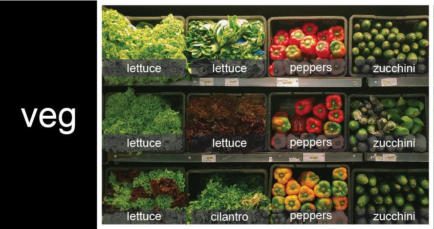
To store the contents of the shelf in a nested list, you write it this way:
PYTHON
veg = [['lettuce', 'lettuce', 'peppers', 'zucchini'],
['lettuce', 'lettuce', 'peppers', 'zucchini'],
['lettuce', 'cilantro', 'peppers', 'zucchini']]Here are some visual examples of how indexing a list of lists
veg works. First, you can reference each row on the shelf
as a separate list. For example, veg[2] represents the
bottom row, which is a list of the baskets in that row.
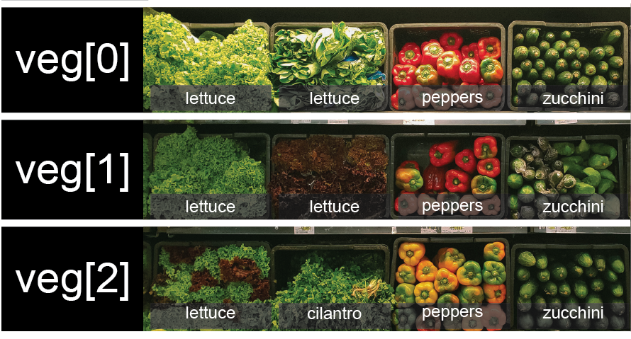
Index operations using the image would work like this:
OUTPUT
['lettuce', 'cilantro', 'peppers', 'zucchini']OUTPUT
['lettuce', 'lettuce', 'peppers', 'zucchini']To reference a specific basket on a specific shelf, you use two indexes. The first index represents the row (from top to bottom) and the second index represents the specific basket (from left to right).
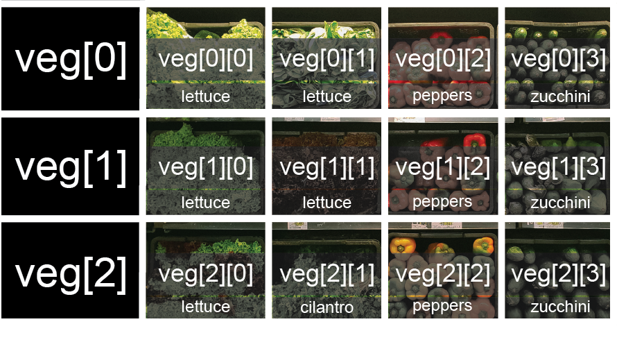
OUTPUT
'lettuce'OUTPUT
'peppers'There are many ways to change the contents of lists besides assigning new values to individual elements:
OUTPUT
odds after adding a value: [1, 3, 5, 7, 11]PYTHON
removed_element = odds.pop(0)
print('odds after removing the first element:', odds)
print('removed_element:', removed_element)OUTPUT
odds after removing the first element: [3, 5, 7, 11]
removed_element: 1OUTPUT
odds after reversing: [11, 7, 5, 3]While modifying in place, it is useful to remember that Python treats lists in a slightly counter-intuitive way.
As we saw earlier, when we modified the mild_salsa list
item in-place, if we make a list, (attempt to) copy it and then modify
this list, we can cause all sorts of trouble. This also applies to
modifying the list using the above functions:
PYTHON
odds = [3, 5, 7]
primes = odds
primes.append(2)
print('primes:', primes)
print('odds:', odds)OUTPUT
primes: [3, 5, 7, 2]
odds: [3, 5, 7, 2]This is because Python stores a list in memory, and then can use
multiple names to refer to the same list. If all we want to do is copy a
(simple) list, we can again use the list function, so we do
not modify a list we did not mean to:
PYTHON
odds = [3, 5, 7]
primes = list(odds)
primes.append(2)
print('primes:', primes)
print('odds:', odds)OUTPUT
primes: [3, 5, 7, 2]
odds: [3, 5, 7]Subsets of lists and strings can be accessed by specifying ranges of values in brackets, similar to how we accessed ranges of positions in a NumPy array. This is commonly referred to as “slicing” the list/string.
PYTHON
binomial_name = 'Drosophila melanogaster'
group = binomial_name[0:10]
print('group:', group)
species = binomial_name[11:23]
print('species:', species)
chromosomes = ['X', 'Y', '2', '3', '4']
autosomes = chromosomes[2:5]
print('autosomes:', autosomes)
last = chromosomes[-1]
print('last:', last)OUTPUT
group: Drosophila
species: melanogaster
autosomes: ['2', '3', '4']
last: 4Slicing From the End
Use slicing to access only the last four characters of a string or entries of a list.
PYTHON
string_for_slicing = 'Observation date: 02-Feb-2013'
list_for_slicing = [['fluorine', 'F'],
['chlorine', 'Cl'],
['bromine', 'Br'],
['iodine', 'I'],
['astatine', 'At']]OUTPUT
'2013'
[['chlorine', 'Cl'], ['bromine', 'Br'], ['iodine', 'I'], ['astatine', 'At']]Would your solution work regardless of whether you knew beforehand the length of the string or list (e.g. if you wanted to apply the solution to a set of lists of different lengths)? If not, try to change your approach to make it more robust.
Hint: Remember that indices can be negative as well as positive
Non-Continuous Slices
So far we’ve seen how to use slicing to take single blocks of successive entries from a sequence. But what if we want to take a subset of entries that aren’t next to each other in the sequence?
You can achieve this by providing a third argument to the range within the brackets, called the step size. The example below shows how you can take every third entry in a list:
PYTHON
primes = [2, 3, 5, 7, 11, 13, 17, 19, 23, 29, 31, 37]
subset = primes[0:12:3]
print('subset', subset)OUTPUT
subset [2, 7, 17, 29]Notice that the slice taken begins with the first entry in the range, followed by entries taken at equally-spaced intervals (the steps) thereafter. If you wanted to begin the subset with the third entry, you would need to specify that as the starting point of the sliced range:
PYTHON
primes = [2, 3, 5, 7, 11, 13, 17, 19, 23, 29, 31, 37]
subset = primes[2:12:3]
print('subset', subset)OUTPUT
subset [5, 13, 23, 37]Use the step size argument to create a new string that contains only every other character in the string “In an octopus’s garden in the shade”. Start with creating a variable to hold the string:
What slice of beatles will produce the following output
(i.e., the first character, third character, and every other character
through the end of the string)?
OUTPUT
I notpssgre ntesaeIf you want to take a slice from the beginning of a sequence, you can omit the first index in the range:
PYTHON
date = 'Monday 4 January 2016'
day = date[0:6]
print('Using 0 to begin range:', day)
day = date[:6]
print('Omitting beginning index:', day)OUTPUT
Using 0 to begin range: Monday
Omitting beginning index: MondayAnd similarly, you can omit the ending index in the range to take a slice to the very end of the sequence:
PYTHON
months = ['jan', 'feb', 'mar', 'apr', 'may', 'jun', 'jul', 'aug', 'sep', 'oct', 'nov', 'dec']
sond = months[8:12]
print('With known last position:', sond)
sond = months[8:len(months)]
print('Using len() to get last entry:', sond)
sond = months[8:]
print('Omitting ending index:', sond)OUTPUT
With known last position: ['sep', 'oct', 'nov', 'dec']
Using len() to get last entry: ['sep', 'oct', 'nov', 'dec']
Omitting ending index: ['sep', 'oct', 'nov', 'dec']Overloading
+ usually means addition, but when used on strings or
lists, it means “concatenate”. Given that, what do you think the
multiplication operator * does on lists? In particular,
what will be the output of the following code?
[2, 4, 6, 8, 10, 2, 4, 6, 8, 10][4, 8, 12, 16, 20][[2, 4, 6, 8, 10], [2, 4, 6, 8, 10]][2, 4, 6, 8, 10, 4, 8, 12, 16, 20]
The technical term for this is operator overloading: a
single operator, like + or *, can do different
things depending on what it’s applied to.
Visual intuition for indexing versus slicing
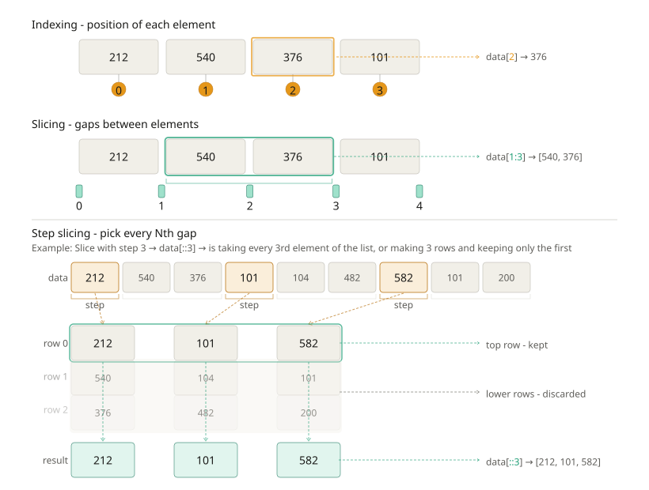
Key Points
-
[value1, value2, value3, ...]creates a list. - Lists can contain any Python object, including lists (i.e., list of lists).
- Lists are indexed and sliced with square brackets (e.g.,
list[0]andlist[2:9]), in the same way as strings and arrays. - Lists are mutable (i.e., their values can be changed in place).
- Strings are immutable (i.e., the characters in them cannot be changed).
Content from Repeating Actions with Loops
Last updated on 2026-11-24 | Edit this page
Overview
Questions
- How can I do the same operations on many different values?
Objectives
- Explain what a
forloop does. - Correctly write
forloops to repeat simple calculations. - Trace changes to a loop variable as the loop runs.
- Trace changes to other variables as they are updated by a
forloop.
In the episode about visualizing data, we wrote Python code that
plots values of interest from our first inflammation dataset
(inflammation-01.csv), which revealed some suspicious
features in it.
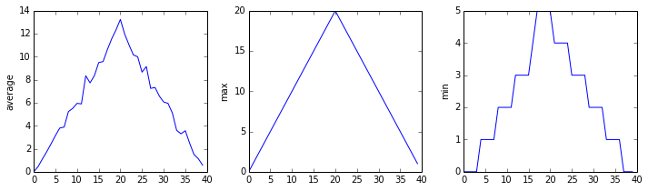
We have a dozen data sets right now and potentially more on the way if Dr. Maverick can keep up their surprisingly fast clinical trial rate. We want to create plots for all of our data sets with a single statement. To do that, we’ll have to teach the computer how to repeat things.
An example task that we might want to repeat is accessing numbers in a list, which we will do by printing each number on a line of its own.
In Python, a list is basically an ordered collection of elements, and
every element has a unique number associated with it — its index. This
means that we can access elements in a list using their indices. For
example, we can get the first number in the list odds, by
using odds[0]. One way to print each number is to use four
print statements:
OUTPUT
1
3
5
7This is a bad approach for three reasons:
Not scalable. Imagine you need to print a list that has hundreds of elements. It might be easier to type them in manually.
Difficult to maintain. If we want to decorate each printed element with an asterisk or any other character, we would have to change four lines of code. While this might not be a problem for small lists, it would definitely be a problem for longer ones.
Fragile. If we use it with a list that has more elements than what we initially envisioned, it will only display part of the list’s elements. A shorter list, on the other hand, will cause an error because it will be trying to display elements of the list that do not exist.
OUTPUT
1
3
5ERROR
---------------------------------------------------------------------------
IndexError Traceback (most recent call last)
<ipython-input-3-7974b6cdaf14> in <module>()
3 print(odds[1])
4 print(odds[2])
----> 5 print(odds[3])
IndexError: list index out of rangeHere’s a better approach: a for loop
OUTPUT
1
3
5
7This is shorter — certainly shorter than something that prints every number in a hundred-number list — and more robust as well:
OUTPUT
1
3
5
7
9
11The improved version uses a for loop to repeat an operation — in this case, printing — once for each thing in a sequence. The general form of a loop is:
Using the odds example above, the loop might look like this:
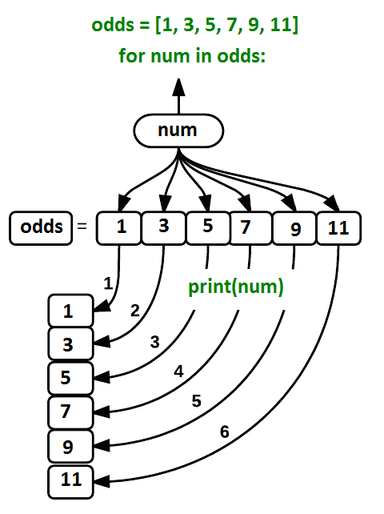
where each number (num) in the variable
odds is looped through and printed one number after
another. The other numbers in the diagram denote which loop cycle the
number was printed in (1 being the first loop cycle, and 6 being the
final loop cycle).
We can call the loop
variable anything we like, but there must be a colon at the end of
the line starting the loop, and we must indent anything we want to run
inside the loop. Unlike many other languages, there is no command to
signify the end of the loop body (e.g. end for); everything
indented after the for statement belongs to the loop.
What’s in a name?
In the example above, the loop variable was given the name
num as a mnemonic; it is short for ‘number’. We can choose
any name we want for variables. We might just as easily have chosen the
name banana for the loop variable, as long as we use the
same name when we invoke the variable inside the loop:
OUTPUT
1
3
5
7
9
11It is a good idea to choose variable names that are meaningful, otherwise it would be more difficult to understand what the loop is doing.
Here’s another loop that repeatedly updates a variable:
PYTHON
length = 0
names = ['Curie', 'Darwin', 'Turing']
for value in names:
length = length + 1
print('There are', length, 'names in the list.')OUTPUT
There are 3 names in the list.It’s worth tracing the execution of this little program step by step.
Since there are three names in names, the statement on line
4 will be executed three times. The first time around,
length is zero (the value assigned to it on line 1) and
value is Curie. The statement adds 1 to the
old value of length, producing 1, and updates
length to refer to that new value. The next time around,
value is Darwin and length is 1,
so length is updated to be 2. After one more update,
length is 3; since there is nothing left in
names for Python to process, the loop finishes and the
print function on line 5 tells us our final answer.
Note that a loop variable is a variable that is being used to record progress in a loop. It still exists after the loop is over, and we can re-use variables previously defined as loop variables as well:
PYTHON
name = 'Rosalind'
for name in ['Curie', 'Darwin', 'Turing']:
print(name)
print('after the loop, name is', name)OUTPUT
Curie
Darwin
Turing
after the loop, name is TuringNote also that finding the length of an object is such a common
operation that Python actually has a built-in function to do it called
len:
OUTPUT
4len is much faster than any function we could write
ourselves, and much easier to read than a two-line loop; it will also
give us the length of many other things that we haven’t met yet, so we
should always use it when we can.
From 1 to N
Python has a built-in function called range that
generates a sequence of numbers. range can accept 1, 2, or
3 parameters.
- If one parameter is given,
rangegenerates a sequence of that length, starting at zero and incrementing by 1. For example,range(3)produces the numbers0, 1, 2. - If two parameters are given,
rangestarts at the first and ends just before the second, incrementing by one. For example,range(2, 5)produces2, 3, 4. - If
rangeis given 3 parameters, it starts at the first one, ends just before the second one, and increments by the third one. For example,range(3, 10, 2)produces3, 5, 7, 9.
Using range, write a loop that prints the first 3
natural numbers:
The body of the loop is executed 6 times.
Summing a list
Write a loop that calculates the sum of elements in a list by adding
each element and printing the final value, so
[124, 402, 36] prints 562
Computing the Value of a Polynomial
The built-in function enumerate takes a sequence (e.g. a
list) and generates a new sequence of the
same length. Each element of the new sequence is a pair composed of the
index (0, 1, 2,…) and the value from the original sequence:
The code above loops through a_list, assigning the index
to idx and the value to val.
Suppose you have encoded a polynomial as a list of coefficients in the following way: the first element is the constant term, the second element is the coefficient of the linear term, the third is the coefficient of the quadratic term, where the polynomial is of the form \(ax^0 + bx^1 + cx^2\).
OUTPUT
97Write a loop using enumerate(coefs) which computes the
value y of any polynomial, given x and
coefs.
Key Points
- Use
for variable in sequenceto process the elements of a sequence one at a time. - The body of a
forloop must be indented. - Use
len(thing)to determine the length of something that contains other values.
Content from Analyzing Data from Multiple Files
Last updated on 2026-11-24 | Edit this page
Overview
Questions
- How can I do the same operations on many different files?
Objectives
- Use a library function to get a list of filenames that match a wildcard pattern.
- Write a
forloop to process multiple files.
As a final piece to processing our inflammation data, we need a way
to get a list of all the files in our data directory whose
names start with inflammation- and end with
.csv. The following library will help us to achieve
this:
The glob library contains a function, also called
glob, that finds files and directories whose names match a
pattern. We provide those patterns as strings: the character
* matches zero or more characters, while ?
matches any one character. We can use this to get the names of all the
CSV files in the current directory:
OUTPUT
['inflammation-05.csv', 'inflammation-11.csv', 'inflammation-12.csv', 'inflammation-08.csv',
'inflammation-03.csv', 'inflammation-06.csv', 'inflammation-09.csv', 'inflammation-07.csv',
'inflammation-10.csv', 'inflammation-02.csv', 'inflammation-04.csv', 'inflammation-01.csv']As these examples show, glob.glob’s result is a list of
file and directory paths in arbitrary order. This means we can loop over
it to do something with each filename in turn. In our case, the
“something” we want to do is generate a set of plots for each file in
our inflammation dataset.
If we want to start by analyzing just the first three files in
alphabetical order, we can use the sorted built-in function
to generate a new sorted list from the glob.glob
output:
PYTHON
import glob
import numpy
import matplotlib.pyplot
filenames = sorted(glob.glob('inflammation*.csv'))
filenames = filenames[0:3]
for filename in filenames:
print(filename)
data = numpy.loadtxt(fname=filename, delimiter=',')
fig = matplotlib.pyplot.figure(figsize=(10.0, 3.0))
axes1 = fig.add_subplot(1, 3, 1)
axes2 = fig.add_subplot(1, 3, 2)
axes3 = fig.add_subplot(1, 3, 3)
axes1.set_ylabel('average')
axes1.plot(numpy.mean(data, axis=0))
axes2.set_ylabel('max')
axes2.plot(numpy.max(data, axis=0))
axes3.set_ylabel('min')
axes3.plot(numpy.min(data, axis=0))
fig.tight_layout()
matplotlib.pyplot.show()OUTPUT
inflammation-01.csv
OUTPUT
inflammation-02.csv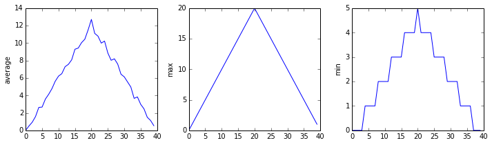
OUTPUT
inflammation-03.csv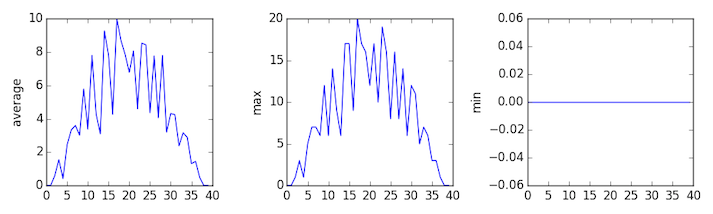
The plots generated for the second clinical trial file look very similar to the plots for the first file: their average plots show similar “noisy” rises and falls; their maxima plots show exactly the same linear rise and fall; and their minima plots show similar staircase structures.
The third dataset shows much noisier average and maxima plots that are far less suspicious than the first two datasets, however the minima plot shows that the third dataset minima is consistently zero across every day of the trial. If we produce a heat map for the third data file we see the following:
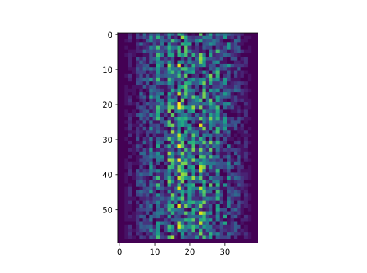
We can see that there are zero values sporadically distributed across all patients and days of the clinical trial, suggesting that there were potential issues with data collection throughout the trial. In addition, we can see that the last patient in the study didn’t have any inflammation flare-ups at all throughout the trial, suggesting that they may not even suffer from arthritis!
Plotting Differences
Plot the difference between the average inflammations reported in the
first and second datasets (stored in inflammation-01.csv
and inflammation-02.csv, correspondingly), i.e., the
difference between the leftmost plots of the first two figures.
PYTHON
import glob
import numpy
import matplotlib.pyplot
filenames = sorted(glob.glob('inflammation*.csv'))
data0 = numpy.loadtxt(fname=filenames[0], delimiter=',')
data1 = numpy.loadtxt(fname=filenames[1], delimiter=',')
fig = matplotlib.pyplot.figure(figsize=(10.0, 3.0))
matplotlib.pyplot.ylabel('Difference in average')
matplotlib.pyplot.plot(numpy.mean(data0, axis=0) - numpy.mean(data1, axis=0))
fig.tight_layout()
matplotlib.pyplot.show()Generate Composite Statistics
Use each of the files once to generate a dataset containing values averaged over all patients by completing the code inside the loop given below:
PYTHON
filenames = glob.glob('inflammation*.csv')
composite_data = numpy.zeros((60, 40))
for filename in filenames:
# sum each new file's data into composite_data as it's read
#
# and then divide the composite_data by number of samples
composite_data = composite_data / len(filenames)Then use pyplot to generate average, max, and min for all patients.
PYTHON
import glob
import numpy
import matplotlib.pyplot
filenames = glob.glob('inflammation*.csv')
composite_data = numpy.zeros((60, 40))
for filename in filenames:
data = numpy.loadtxt(fname = filename, delimiter=',')
composite_data = composite_data + data
composite_data = composite_data / len(filenames)
fig = matplotlib.pyplot.figure(figsize=(10.0, 3.0))
axes1 = fig.add_subplot(1, 3, 1)
axes2 = fig.add_subplot(1, 3, 2)
axes3 = fig.add_subplot(1, 3, 3)
axes1.set_ylabel('average')
axes1.plot(numpy.mean(composite_data, axis=0))
axes2.set_ylabel('max')
axes2.plot(numpy.max(composite_data, axis=0))
axes3.set_ylabel('min')
axes3.plot(numpy.min(composite_data, axis=0))
fig.tight_layout()
matplotlib.pyplot.show()After spending some time investigating the heat map and statistical plots, as well as doing the above exercises to plot differences between datasets and to generate composite patient statistics, we gain some insight into the twelve clinical trial datasets.
The datasets appear to fall into two categories:
- seemingly “ideal” datasets that agree excellently with
Dr. Maverick’s claims, but display suspicious maxima and minima (such as
inflammation-01.csvandinflammation-02.csv) - “noisy” datasets that somewhat agree with Dr. Maverick’s claims, but show concerning data collection issues such as sporadic missing values and even an unsuitable candidate making it into the clinical trial.
In fact, it appears that all three of the “noisy” datasets
(inflammation-03.csv, inflammation-08.csv, and
inflammation-11.csv) are identical down to the last value.
Armed with this information, we confront Dr. Maverick about the
suspicious data and duplicated files.
Dr. Maverick has admitted to fabricating the clinical data for their drug trial. They did this after discovering that the initial trial had several issues, including unreliable data recording and poor participant selection. In order to prove the efficacy of their drug, they created fake data. When asked for additional data, they attempted to generate more fake datasets, and also included the original poor-quality dataset several times in order to make the trials seem more realistic.
Congratulations! We’ve investigated the inflammation data and proven that the datasets have been synthetically generated.
But it would be a shame to throw away the synthetic datasets that have taught us so much already, so we’ll forgive the imaginary Dr. Maverick and continue to use the data to learn how to program.
Key Points
- Use
glob.glob(pattern)to create a list of files whose names match a pattern. - Use
*in a pattern to match zero or more characters, and?to match any single character.